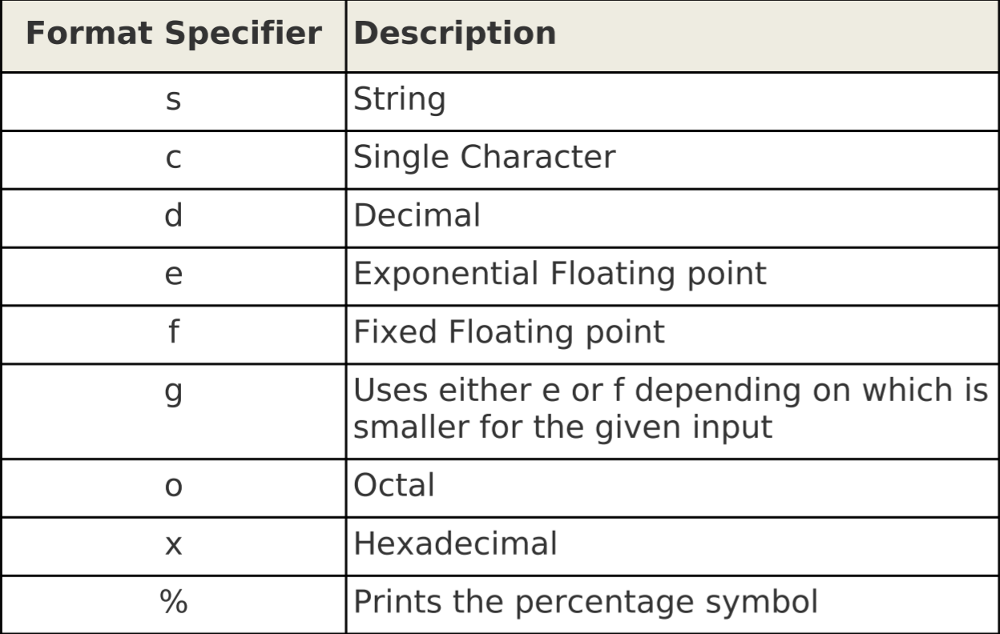

85. Pretty Printing Using printf(灵动输出使用printf)
语法：

printf将不使用OFS,ORS的值
使用了printf之后，OFS,ORS参数将失效
定制格式符

Print with Fixed Column Width (Basic)(输出固定列宽)
同C一样，在%后面加上限定宽度，e.g.
%05s最少5个字符宽度，不足在前面补0%5s最少5个字符宽度，不足在前面补空格(右对齐)%-5s最少5个字符宽度，不足再后面补空格(左对齐)%.1s保留位数，浮点数是保留多少位小数Dot . Precision
123456789101112131415161718192021222324252627$ cat dot.awkBEGIN {print "----Using .1----"printf ".1d--> %.1d\n", 101.23printf ".1e--> %.1e\n", 101.23printf ".1f--> %.1f\n", 101.23printf ".1g--> %.1g\n", 101.23print "----Using .4----"printf ".4d--> %.4d\n", 101.23printf ".4e--> %.4e\n", 101.23printf ".4f--> %.4f\n", 101.23printf ".4g--> %.4g\n", 101.23}$ awk -f dot.awk----Using .1---.1d--> 101.1e--> 1.0e+02.1f--> 101.2.1g--> 1e+02----Using .4---.4d--> 0101.4e--> 1.0123e+02.4f--> 101.2300.4g--> 101.2
Print Report to File(输出结果到文件)
同shell脚本一样，可以配合> 、>>在awk脚本内或命令行添加输出到文件参数
86. Built-in Numeric Functions(内建数值函数)
Awk int(n) Function
int函数，将值格式化为整数型
不是四舍五入，而是截断，
print int(4.9)结果为4。Awk log(n) Function
$\log{n}$
Awk sqrt(n) Function(平方根函数)
$\sqrt {n}$
Awk exp(n) Function(指数函数)
形如$e^n$
Awk sin(n)、cos(n) Function
$\sin(n)$ $\cos(n)$
Awk atan2(m,n) Function(反正切函数)
$\arctan m/n$
87. Random Number Generator(随机数生成器)
Awk rand() Function(随机数函数)
该函数随机生成一个0~1之间的一个数
Awk srand(n) Function(随机数初始化函数)
种子函数
seed种子不变，每次的随机数序列都是一样的。88. Generic String Functions(典型字符串函数)
Index Function(目录函数)
可以查找特定字符在特定字符串的位置
Length Function(长度函数)
输出特定字符串长度length(string)
Split Function(分割函数)
将特定字符串按分隔符分割写入输出数组
语法
如果第三个参数没有指定，则使用默认的
FSSubstr Function(截取函数)
将指定字符串从指定位置，输出指定长度的内容
语法
|
|
89. GAWK/NAWK String Functions(GAWK/NAWK特有字符串函数)
Sub Function(替换函数)
语法
将指定字符串(string-variable)的源字符串(original-string)替换成替换字符串(replacement-string)
第三个参数是可选的，默认为
$0
当成功执行sub函数，返回的结果是1而不是0
每行记录值替换最左边匹配到的字符串一次Gsub Function(全局替换函数)
用法和
sub一样的
相当于sed 's///g'Match Function () and RSTART, RLENGTH variables(match函数和RSTART,RLENGTH参数)
查找指定字符串或正则表达式
语法
|
|
- RSTART 匹配字符串在源字符串开始的位置
- RLENGTH 匹配字符串长度
90. GAWK String Functions(GAWK特有的字符串函数)
改变大小写函数tolower和toupper函数是只在GAWK才有效的函数
91. Argument Processing (ARGC, ARGV, ARGIND)参数处理
- 在命令行上，参数ARGC和ARGV将会被忽略
- ARGC是统计参数个数
- ARGV是一个数组，里面记录了参数值，index从0开始到ARGC
- 当你有5个参数，则ARGC的值为6
- ARGV[0]值总是awk
- ARGIND是当前处理文件的序列号ARGV[ARGIND]里面的值为当前处理的文件名
- 只有一个文件是ARGIND为1
92. OFMT
The OFMT built-in variable is available only in NAWK and GAWK.这个函数值只在NAWK和GAWK里有效
.g是全局的，.f是指☞.后面的12345678910111213141516171819202122232425262728293031323334353637$ cat ofmt.awkBEGIN {total=143.123456789;print "---using g----"print "Default OFMT:", total;OFMT="%.3g";print "%.3g OFMT:", total;OFMT="%.4g";print "%.4g OFMT:", total;OFMT="%.5g";print "%.5g OFMT:", total;OFMT="%.6g";print "%.6g OFMT:", total;print "---using f----"OFMT="%.0f";print "%.0f OFMT:", total;OFMT="%.1f";print "%.1f OFMT:", total;OFMT="%.2f";print "%.2f OFMT:", total;OFMT="%.3f";print "%.3f OFMT:", total;}$ awk -f ofmt.awk---using g----Default OFMT: 143.123%.3g OFMT: 143%.4g OFMT: 143.1%.5g OFMT: 143.12%.6g OFMT: 143.123---using f---%.0f OFMT: 143%.1f OFMT: 143.1%.2f OFMT: 143.12%.3f OFMT: 143.123
93. GAWK Built-in Environment Variables(内建环境变量)
只有GAWK有效
ENVIRON
这个是非常有用的，当你想在awk脚本中调用shell的环境变量时。ENVIRON是一个数组，包含了所有环境变量的值的数组，而index的值则是环境变量的名字。
For example,ENVIRON["PATH"]表示的就是环境变量PATH的值
IGNORECASE
IGNORECASE默认值为0，表示大小写敏感，可以设置为1表示忽略大小写
ERRNO
错误输出，将错误信息写入到变量ERRNO中
94. Awk Profiler - pgawk
这个选项会将程序文件以一种很优美的方式输出（译注：用于格式化 awk 脚本文件）。默认输出文件是 awkprof.out。
先创建一个awk脚本
执行下面命令
查看输出的格式化脚本
发现进行了格式化
95. Bit Manipulation(位操作)
与或非、左移、右移
96. User Defined Functions(用户自定义函数)
语法：
97. Language Independent Output (Internationalization)(语言独立输出(国际))
98. Two Way Communication
Awk can communication to an external process using “|&”, which is two way communication.
使用|&标记能调用其他命令
99. System Function(system函数)
你可以在system函数里调用外部内建函数
100. Timestamp Functions(时间函数)
These are available only in GAWK.systime()
101. getline Command(getline命令)
单独使用getline 则读取下一行(和sed的n命令一样)
|
|
getline后面带参数
和sed的hold空间差不多
读取一个文件
使用<
读取一个文件到变量
|
|
读取一个外部命令
|
|